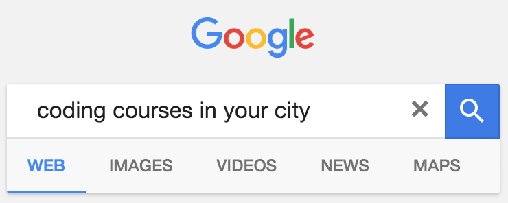

My name is Guilherme Rodrigues and I work at Tictail
I want you to
Make a difference
Help a newbie
We are all
Part of the community ⭐
There are lots of
Ways to help 🚀
The best one is to
Help a beginner 🌱
Local
Coding schools 📚

Setup emails for a tag at
Stack Overflow 🌍
That was a brilliant answer. I learned more about JavaScript from this one answer than anything else I've ever done in my life. Thank you.
- Pavan Katepalli